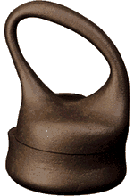
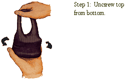
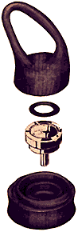
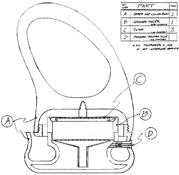
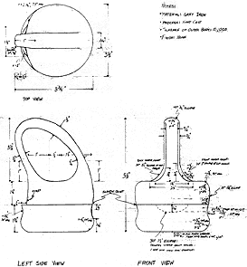
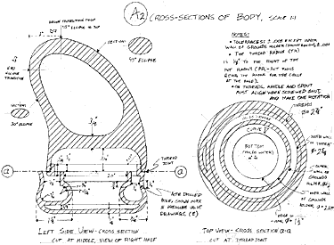

Moka Maker

In case you didn't know (I didn't), moka is an Italian coffee similar to espresso. I surmised that moka drinkers, a rare breed in this country, had a penchant for uniquely designed products, which is why my rich cast-iron moka maker contrasts the stark aluminum and black plastic of typical moka makers. The soft flowing shape presents an attractive anthropomorphic appearance while the inner structure is designed for function. Another important element in the moka is the handle, which accommodates a 95th percentile hand-width and is angled to work with, not against, the arm's mechanics, thus facilitating pouring and carrying.
Instructions for Moka-Making

The moka-maker is easy to use, as shown in this 6-step slide show.
Cross-Section

The moka's efficient use of space makes two cups of moka (most people drink one cup — it's strong stuff). The inner ring holds the water which, when heated, rises through the grounds holder (creating coffee), then spills into the outer ring which holds the coffee and makes it available for pouring.
Technical Drawings

Consisting of only several main parts, the moka retains a simple shape that is virtually unbreakable and easy to clean. The base and upper portion are cast-iron, while the inner parts consist of stainless steel and polyurethane. The handle is insulated (on the inside) to prevent burning the user's hand.



Close this Window